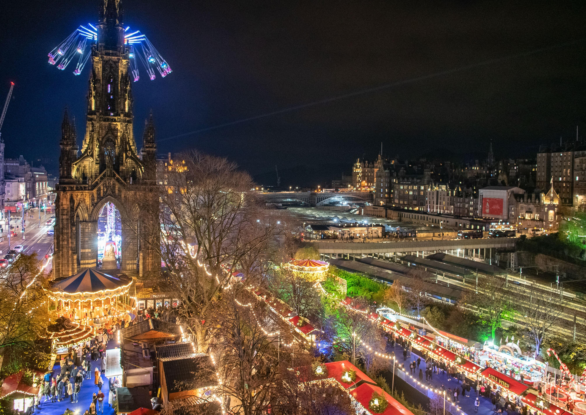
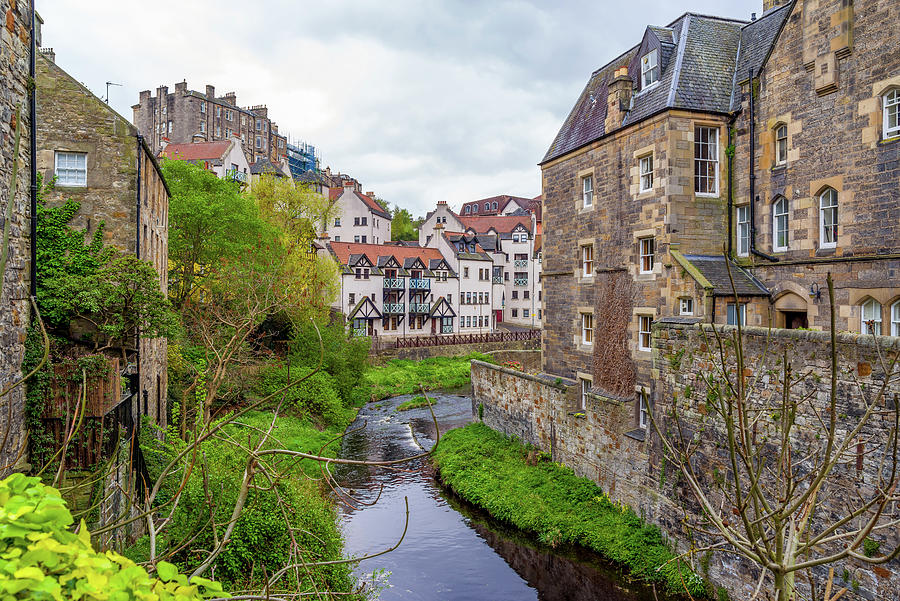

Welcome to my hometown Edinburgh
I’ve been living in Edinburgh since 2020 and like the city, I’m a huge fan of football so living in front of the Easter Road stadium has been ideal.I also really enjoy the Christmas market as the food is delicious and there’s plenty of variety.

My favourite restaurants:
- Tattu
- Duck & Waffle
- The Lookout by gardeners cottage
My favourite walks:
- Water of Leith
- Circus Lane
- Easter Road

For more information please click here